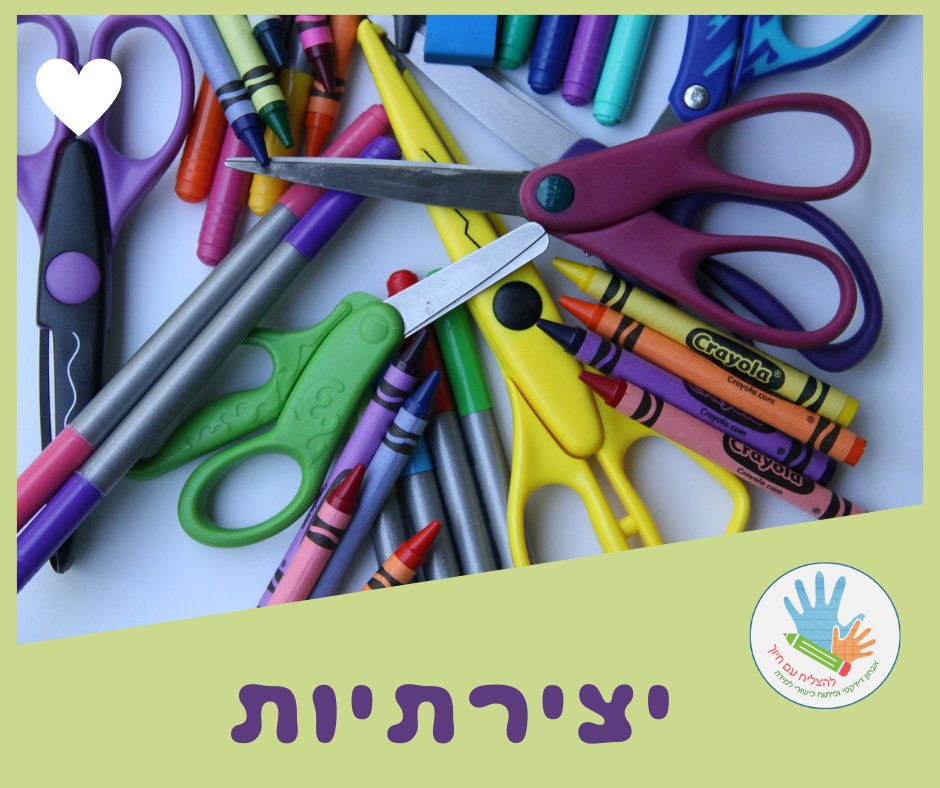

יצירתיות

ערך חשוב נוסף עבורי הוא #יצירתיות
#יצירתיות - תהליך ההפקה של רעיונות מקוריים ורלוונטיים לסיטואציה הנתונה.
חשיבה יצירתית מורכבת ממקוריות, גמישות ושימושיות.
(מתוך ויקיפדיה)
היצירתיות היא מרכיב חיוני ביכולת התפקוד שלנו, נמצאת בבסיס המצאות רבות וגם בפתרונות חדשים לבעיות נפוצות מחיי היום יום של בני האדם.
בשיעורי הוראה מתקנת,
ה- #תיקון הוא של שיטות ההוראה (ולא של התלמידים..).
בשיעורים פרטניים, לעומת שיעורים בכיתה,
ניתן להתאים לכל ילד שיטות לימוד לפי צרכיו.
וכאן נכנסת לתמונה היצירתיות!
הראש פתוח וכל פעם נוספים עוד ועוד רעיונות!
למידה באמצעות משחקים -
משחקי זיכרון, משחקי רביעיות, סולמות ונחשים, איקס/עיגול..
למידה תוך כדי תנועה -
קפיצות קדימה ואחורה על ציר המספרים, קפיצות ים-יבשה בין שני צלילים..
למידה על ידי שירים שיסייעו להכניס את החומר טוב יותר לראש..
ועוד ועוד ועוד!!!
לכל משחק אפשר 'להכניס' את חומר הלימוד,
בבת אחת נכנס עניין, כיף ו- #חיוך 😊
הלמידה משמעותית יותר ומה שעבדנו עליו יישמר לאורך זמן!
יש לכם רעיונות למשחקים,
או הייתם רוצים לקבל רעיון למשחק?
כתבו לי!